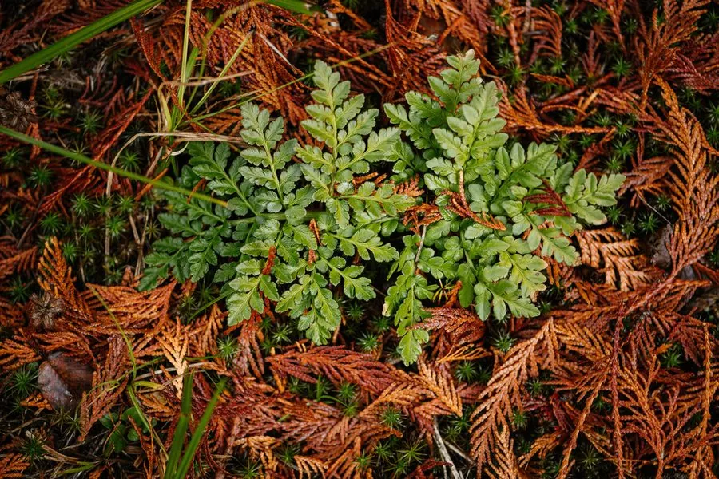

蕨类与裸子植物 · 植物界
阴地蕨 Botrychium ternatum

阴地蕨的叶分为营养叶和孢子叶两部分，孢子叶像一串小葡萄，常生于林下阴湿处，全草可入药，有小毒。
- 分类
- 门蕨类植物门纲瓶尔小草纲目瓶尔小草目科阴地蕨科属阴地蕨属
- 栖息环境
- 林下、灌丛与阴湿山坡，喜阴湿凉爽
- 地理分布
- 中国东北、华北、华东、西南及东亚地区
- 保护级别
- 暂无评估；野生种群较少，需保护生境
物种志
阴地蕨是阴地蕨科小型蕨类，株高 15–40 cm。根状茎短，肉质。叶二型或同型，营养叶三角形，二至三回羽状细裂，叶脉明显；孢子叶从营养叶基部伸出，长而直立，分枝成圆锥状，密生球形孢子囊，形似一串串小葡萄。孢子囊成熟时呈黄色，开裂散出孢子。
阴地蕨喜阴湿、凉爽环境，常生于林下、灌丛与阴湿山坡，在温带和亚热带山地有分布。它属于古老的瓶尔小草类，形态特殊，是研究蕨类演化的重要材料。阴地蕨以孢子繁殖，生长较慢。全草在民间作药用，称“一朵云”，有清热解毒、平肝明目、止咳之效，用于小儿惊风、目赤肿痛等症；但全草有小毒，使用需谨慎。它植株小巧，孢子叶形态别致，也可作趣味观赏植物。
形态与习性
- 株高15–40 cm
- 叶营养叶三角形，二至三回羽状细裂
- 孢子叶圆锥状分枝，形似小葡萄
- 药用全草称“一朵云”
- 注意全草有小毒，慎用
趣味知识
- 阴地蕨的孢子叶像一串小葡萄，和营养叶形态完全不同。
- 它属于古老的瓶尔小草类，对研究蕨类演化有重要价值。
- 民间用阴地蕨全草清热平肝，但有小毒，要慎用。